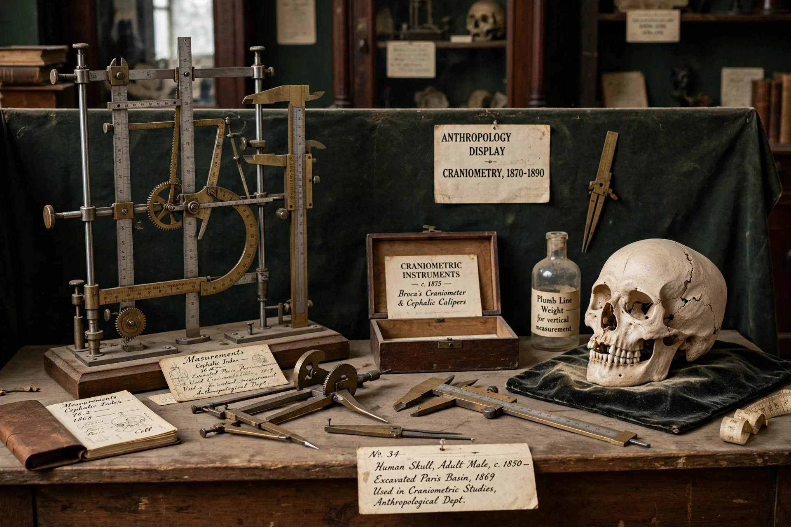

Scientific racism

Scientific racism, sometimes termed biological racism, is the pseudoscientific belief that the human species can be subdivided into biologically distinct races and that empirical evidence exists to support or justify racial discrimination, racial inferiority, or racial superiority. Historically, scientific racist ideas received credence within the scientific community, but they are no longer considered scientific; in the period from the 17th to the mid-20th century they were used to justify slavery, colonialism, segregation, forced sterilisation, and genocide.
Origins and development
Early taxonomists classified humans into varieties: Carl Linnaeus divided Homo sapiens into four continental types in Systema Naturae (1735), and Johann Friedrich Blumenbach proposed five races in 1775, though Blumenbach himself opposed claims of intellectual inferiority. In the 19th century, American physician Samuel George Morton's skull measurements (Crania Americana, 1839) were used to argue for polygenism — the separate creation of races — while Arthur de Gobineau's Essay on the Inequality of the Human Races (1853–1855) ranked an "Aryan" race highest. Phrenology and craniometry lent these hierarchies a veneer of measurement, though the underlying data were frequently manipulated or selectively interpreted.
Eugenics and the twentieth century
Francis Galton's eugenics movement gave scientific racism an applied programme: encouraging reproduction among the supposedly fit and restricting it among the unfit. In the United States, eugenic research at Cold Spring Harbor informed immigration restriction (Immigration Act of 1924) and compulsory sterilisation laws upheld in Buck v. Bell (1927). In Germany, racial hygiene culminated in the Nuremberg Laws, the Aktion T4 killing programme, and the Holocaust. Anthropologists such as Franz Boas had challenged the premises of racial typology from the early 1900s, demonstrating the plasticity of traits like head shape and the dominance of culture over biology in shaping behaviour.
Rejection
After the Second World War the scientific consensus turned decisively. UNESCO's Statements on Race (1950, 1951) declared race a social myth rather than a biological category of ranked types. Later genetic research confirmed that most human genetic variation occurs within, not between, conventionally defined racial groups, and that traits used to define race vary independently. The American Association of Physical Anthropologists and other bodies have issued statements rejecting biological racial determinism. Claims of innate racial hierarchy in intelligence or behaviour, periodically revived, remain outside the scientific mainstream and are critiqued for methodological flaws and for ignoring environmental confounds.
Legacy
Scientific racism left durable institutional legacies — in law, medicine, and anthropology collections assembled from colonised peoples — and its history is now a standard case study in how social prejudice can distort scientific method. Modern scholarship emphasises that the rejection of scientific racism rests not only on moral grounds but on the failure of its empirical claims.
See also: Francis Galton · Aktion T4 · Eugenics · Race (human categorization)